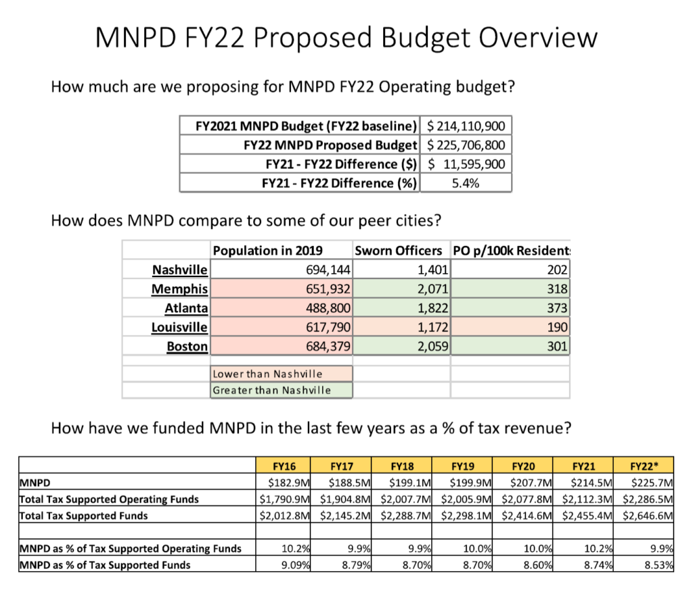
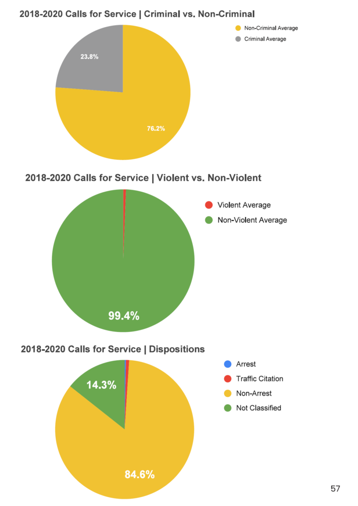
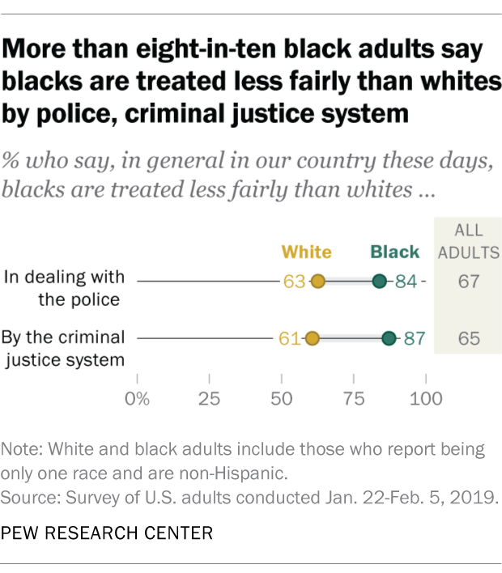
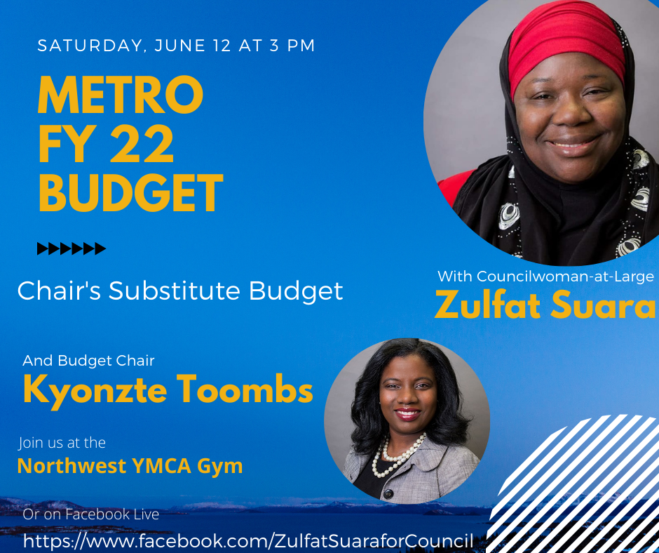

The Cost of Public Safety -Too High or Not High Enough
Last week’s Budget Conversation investigated the way we fund public safety in our community. After this discussion with our six panelists, I was reminded that public safety comes in many forms, and from many different sources. That being said, each panelist had their own perspective on how we should be allocating our resources and where public safety measures should originate. However, one thing rang true for all our guests: Nashville needs a better mechanism through which to attend to mental health calls. Below are some of the most important talking points made by each participant in the order that they presented:
Deputy Chief Chris Taylor
Deputy Chief Chris Taylor has been with MNPD for almost 30 years now, and has lots of experience working with Nashville’s criminal justice system. He gave us a look into the structural changes that are expected to take place at MNPD in the coming years such as:
- Organizational Excellence: Streamlining of resources to save money, ultimately giving more responsibility to each staff member.
- Office of Alternative Policing: Deputy Chief Taylor indicated that Nashville is looking forward to following a co-ops model similar to Denver in order to better respond to mental health calls. This model aims to have a trained clinician riding with the officers every day of the week to better address mental health problems at hand.
- Interpersonal Branch: This branch aims to provide direct advocates for victims of domestic violence, sex crimes, trafficking, etc., which is an approach that will be relatively unique to MNPD. He emphasized that they want to create the best service possible for all individuals.
- Precision policing: Deputy Chief Taylor acknowledged that MNPD had been using too much of a blanket-approach to deal with crime in certain areas, resulting in unfair over-policing of specific neighborhoods. With precision policing, the organization seeks to use analytics (working with federal partners) to better mold tactics to each area. They also created a centralized homicide unit to avoid loss of resources that occurred at the precinct-only level.
- Do no harm policy: This policy applies both internally and externally. One way through which the department is trying to uphold this principle is through more intentional recruitment of officers with diversity in mind.
Deputy Chief Taylor also broke down how the $11.6 million proposed budget increase would be allocated within MNPD. The main expense will be incurred by creating the new precinct in southeast Nashville. He explained that in order to open a new precinct, MNPD needs 130 sworn officers and one civilian to operate. As a result, most of the money will be directed toward the staffing and training of 40 out of those 130 officers this year. The remaining officers will be staffed and trained in waves over the upcoming years until the precinct is ready to open. Other expenses include the incorporation of the new pay plan that was established for all metro employees (a total of about $1 million) as well as further investment in body cameras and the IT support related to body cameras.

Mr. Michael Randolph
Mr. Michael Randolph is the Crisis Supervisor at Mental Health Cooperative. He strongly advocated for a crisis intervention team made up of the officers themselves, in addition to the trained clinicians riding alongside them. These officers would complete intensive 40-hr training on topics such as verbal de-escalation to better address incidents related to mental health. He also proposed that there should be some sort of follow-up specialist that helps connect the individual in question with mental health services following the incident. The main goal is to reduce interaction with the criminal justice system itself and instead de-escalate the situation and provide services earlier along the way.
While Mr. Randolph believes that one solution does not cover mental health, and that there is room in the future for both the kahoots and co-response model; he stressed that the MHC strongly recommended that metro implement the co-response model first. Accordingly to him, this model deals with extreme cases where the individual can cause harm to themselves or others. Mental Health Cooperative’s website is linked here. If you have further questions about the co-response program or mental health crisis response, please feel free to reach out to me or Mr. Randolph directly at jrandolph@mhc-tn.org
Mr. Andrew Krinks
Mr. Andrew Krinks is an organizer with the Nashville People’s Budget Coalition: a coalition of several grassroots organizations. The goal of the coalition is to ensure that the people’s voices are heard in the budget process. The group wants Metro to redefine public safety as the following, “Public safety includes communities with fully funded education, access to housing and health care, and freedom from policing and jails.” According to Mr. Krinks, budgets are a reflection of what a city values the most and, unfortunately, in his eyes, Nashville is not prioritizing the right values.
The coalition recently published a report aimed at educating the public on some basics about how the budget works, while detailing how the city spends more on police and jails than on almost all public goods combined.
According to the report:
- Out of every $100 in the General Fund, Nashville spends $36 on cops and cages, but only $1 on affordable housing and $0.66 on social services
- Nashville spends more than $1 million every day on cops, courts, and cages, but $27,000 per day on affordable housing
- The city spends $6.8 million every year to police students in Metro Nashville Public Schools
- For FY22, Mayor Cooper is proposing an $11.5 million increase in spending on police, largely to hire 40 new officers to staff the soon-to-be-built Southeast Precinct
- Most calls for service are officer-initiated, not resident-initiated, and calls are decreasing year by year
- The FY22 Capital Improvements Budget contains a massive police wish list, totaling more than $165 million
Rather than continue to increase MNPD’s funding, the coalition believes that the money should go to other social services and public goods. Per Mr. Krinks, studies show that the safest communities are the ones with the most resources, not the most police. For more information, see the 2021-2022 report published by the Nashville People’s Budget Coalition here.

Ms. Theeda Murphy
Ms. Theeda Murphy also is a part of the Nashville People’s Budget coalition. She has an extensive background in mental health, which includes working with MNPD. Her contribution to our conversation was particularly interesting because she noted that when she rode along with officers to calls relating to mental health, she felt as though she was working two jobs at once: one to respond to the person in crisis, and another to keep the police officer from arresting the person. The lack of communication and control was enough to lead her to believe that the co-response model is not sufficient in addressing the needs of individuals suffering from mental health complications.
She shared her concern and that of the people’s budget on the paradox of over-policing. On one hand, it creates deep-rooted trauma and mistrust in the community. On the other hand, it is the only reliable social service that people in underserved communities have access to. In her opinion, such a paradox creates an abusive and co-dependent relationship with the police that causes more tensions and misunderstandings down the line. She called into question why improved social services cannot be administered through a different department such as public health or social services, instead of MNPD
Ms. Christy Armstrong
Christy Armstrong spoke on our panel as a committed member of the Antioch community. Having lived in the area for a long time she considers herself deeply invested in where she lives and has advocated for a long time for the addition of the ninth precinct. In her opinion, an increased police force is absolutely necessary to keep her and her family safe, especially when it concerns reckless driving and drag racing near her house. She noted that she could easily go a full week without seeing a police officer in the area and that it takes at least 25 minutes for an officer to arrive from the neighboring communities. While she did voice some concerns about the safety of her husband and children as black individuals amidst increased police presence, she believes that it is possible to create good relationships with law enforcement no matter what. And, in reality, she believed she or other community members should not have to police reckless driving and other concerning behavior on their own.
Dr. Phyllis Hildreth
Dr. Phyllis Hildreth is the VP for Institutional Strategy and Academics at American Baptist College and leads the ‘Called to Lives of Meaning and Purpose” Initiative. She is member of the Institute for Conflict Management at Lipscomb University, member of the Community Oversight Board and has worked as both a public defender and a warden in the past. Her professional and community insight was very helpful as she analyzed things from a very structural point of view.
Some of the questions that she offered are the following:
- Does the current budget sufficiently fund the police department to adhere to the hiring advisories presented by the Community Oversight Board (COB)? The advisory report is linked here if you are interested.
- What are the specific recommendations at stake? Yes, we all discussed better attention to mental health and juvenile diversion, but what are the specific programs in question and their alternatives?
- Are we funding the public entities that are designed, equipped, and commissioned to provide these services? In other words, are these entities able to provide a balance between public safety and public trauma? Are they an appropriate venue through which to enact these programs?
- What are the indices that the community is going to advocate or support to determine what is the correct level of funding in the future? This is an extended process, not just a one-time decision, so the city needs a unified opinion on this front.
All these questions and more are extremely important to consider for me and my fellow councilmembers. We want to ensure that public safety and public services are accessible to everyone and that they are as effective as possible. I thank Dr. Hildreth for giving me a lot to think about.
Concluding Remarks
I believe that this conversation was one of the most valuable discussions we have had so far, because it gave us all a chance to hear some new perspectives on an age-old problem. Local and national data have shown that Black and Brown communities are disproportionately impacted by the law enforcement/judicial system. In a 2019 study (conducted by the Pew Research Center), 84% of black adults said that, in dealing with police, blacks are generally treated less fairly than whites while 63% of whites said the same. Similarly, 87% of blacks and 61% of whites said the U.S. criminal justice system treats black people less fairly. Additionally, a 2016 study conducted by Gideon’s Army showed there is racial profiling in metro Nashville traffic stops. It is therefore important that we must rethink policing both locally and nationally. I applaud MNPD Chief Drake for initiating new structural changes to help address the inequities. I am also grateful to our residents for continuing to challenge our government and asking us to do better.

It is clear to me that new initiatives must be put into place to care for our citizens in more ways than one. I believe that Mr. Randolph put it perfectly, we need a “yes and” model, not necessarily one or the other. We need police officers who are better equipped to enter a situation of crisis without further escalating the situation. We also need better services to attend to mental health, lack of housing, addiction, education etc. in the long term, because ALL of these issues impacts our residents public safety
If you missed last week’s Budget Conversation with Deputy Chief Chris Taylor, Mr. Michael Randolph, Mr. Andrew Krinks. Ms. Theeda Murphy, Ms. Christy Armstrong and Dr. Phyllis Hildreth, you can watch the entire episode at the link below.
Next Budget Conversation
Join me at the Northwest YMCA, Saturday at 3pm as Budget Chair Councilwoman Kyonzte Toombs, and I discuss her substitute budget. How is the substitute different? what is included or omitted and why? You’re welcome to attend in person or watch live on Facebook at https://www.facebook.com/ZulfatSuaraforCouncil/

As always, if you have any questions or concerns about anything we have discussed, please do not hesitate to reach out to me.